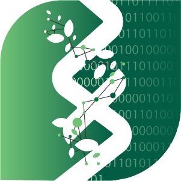

Skip to content

Biodiversity Data Lab
Uppsala University
Toggle navigation
Home
Research
Team
Outputs
Connect
404
This trail does not lead to a page.
The redesigned site is organized around Research, Team, Outputs, and Connect.
Return home
→